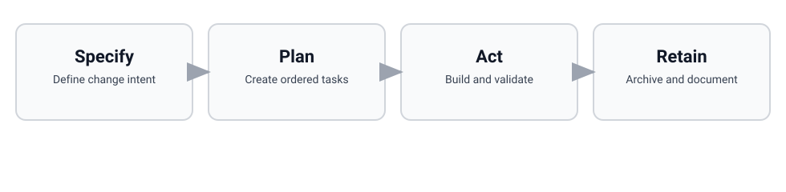

Clarity before code
SPAR-kit starts with intent, scope, and constraints so implementation does not sprint ahead of understanding.
Specify. Plan. Act. Retain.
SPAR-kit brings calm structure to AI-assisted delivery: align intent, keep context focused, plan before acting, and retain the project memory that makes the next change easier.
Install in one command
npx spar-kit install
Click the command to select it, or use the copy button.
Immediate next step
spar.init.
spar.init verifies setup, establishes a clean baseline, and
hands off naturally to your first Specify step. Keep the hero focused on
install, then let initialization carry the workflow forward.
npx spar-kit install.spar.init.Why it works
SPAR-kit starts with intent, scope, and constraints so implementation does not sprint ahead of understanding.
AI performs better when context stays lean and relevant. SPAR-kit keeps the inputs small enough to reason with and strong enough to ship from.
Explicit planning reduces drift, helps the right change ship first, and keeps validation tied to the original goal.
Retain captures what changed and why, giving future sessions a trustworthy source of project memory instead of another pile of loose notes.
Workflow
SPAR-kit is not just about writing specs. It is a practical loop that keeps intent visible, turns plans into shipped outcomes, and preserves what matters when the work is done.
Clarify goals, scope, and constraints before implementation starts.
Turn the change into an explicit sequence that reduces drift.
Implement in the repo with validation tied to the plan and spec.
Preserve decisions and shipped behavior as durable project memory.

Further reading
SPAR-kit is designed for teams that want lightweight structure without inheriting heavyweight process. It keeps the emphasis on understanding the change, carrying a plan all the way through implementation, and retaining the context that will matter next time.
That makes it a strong fit when broader agent toolkits feel too diffuse, spec-only workflows stop short of shipped outcomes, or formal specification systems add more ceremony than day-to-day engineering work needs. The goal is not more process. The goal is better context, steadier execution, and lasting project memory.